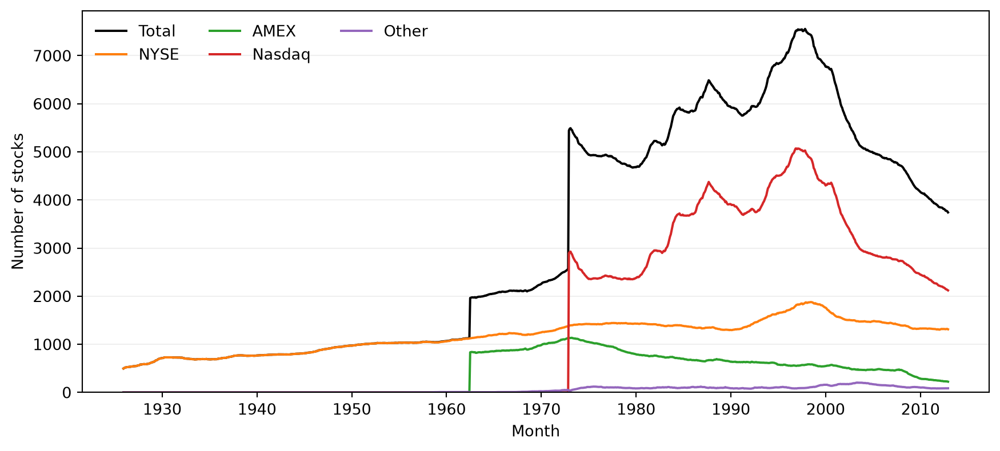
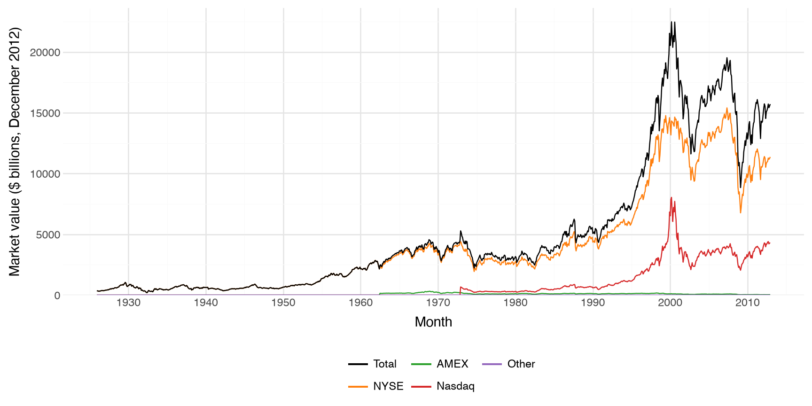
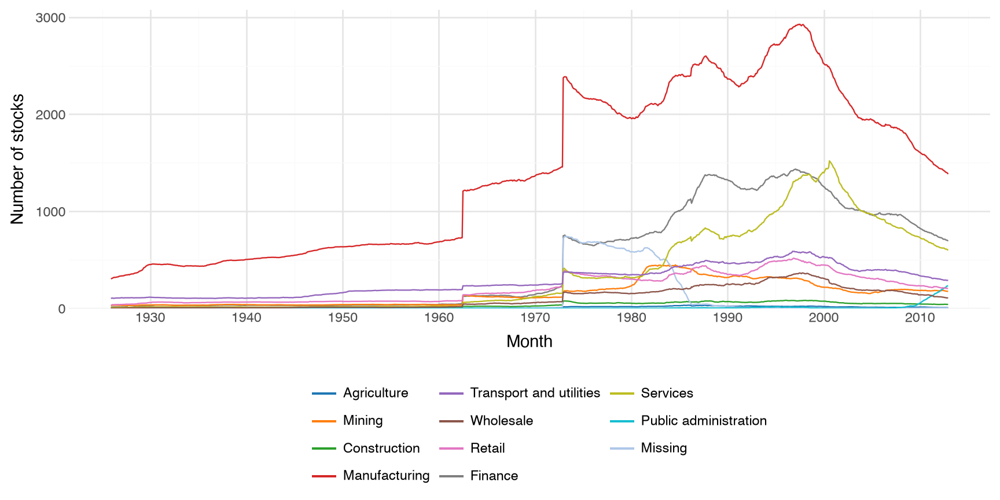
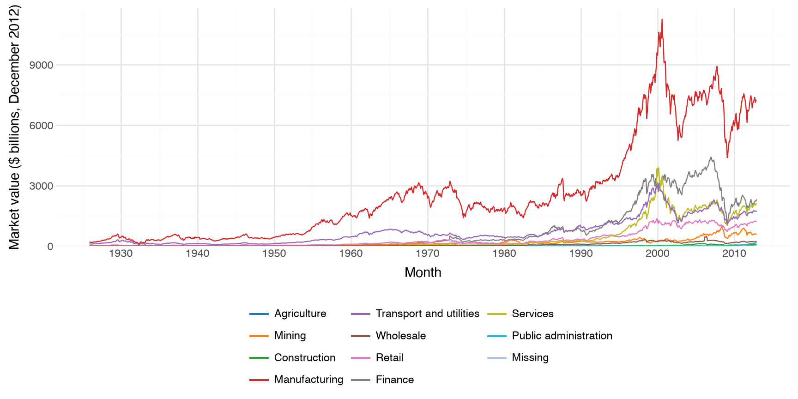
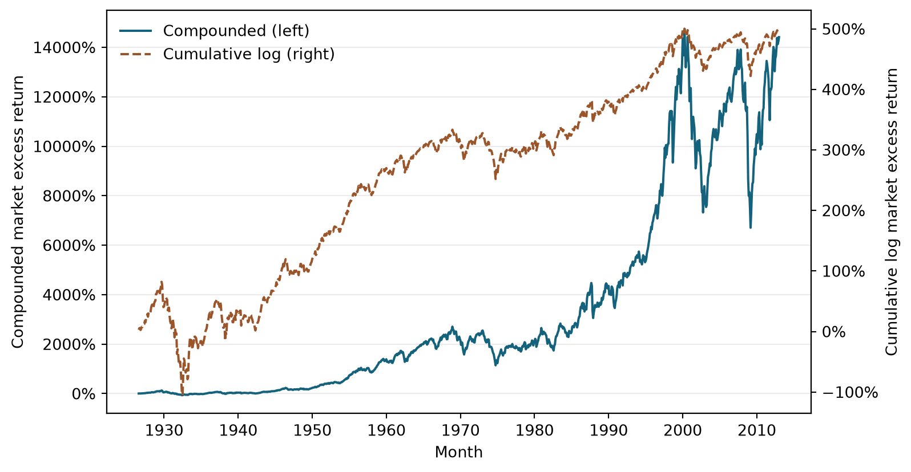

import polars as pl
from era_pl import load_parquet
first = pl.date(1925, 12, 1)
last = pl.date(2012, 12, 1)
msf = (
load_parquet("msf", "crsp")
.with_columns(month=pl.col("date").dt.month_start())
.filter(pl.col("month").is_between(first, last))
.select(
"permno", "month", "date", "altprc", "prc", "ret",
cap=pl.when((pl.col("altprc") != 0) & (pl.col("shrout") > 0))
.then((pl.col("altprc") * pl.col("shrout")).abs() / 1000),
)
)
names = (
load_parquet("msenames", "crsp")
.filter(
pl.col("shrcd").is_in([10, 11]),
pl.col("namedt") <= last.dt.month_end(),
pl.col("nameendt") >= first,
)
.with_columns(
month=pl.date_ranges(
pl.max_horizontal(pl.col("namedt").dt.month_start(), first),
pl.min_horizontal(pl.col("nameendt").dt.month_start(), last),
interval="1mo",
)
)
.explode("month")
.filter(pl.col("month").dt.month_end().is_between("namedt", "nameendt"))
.select("permno", "month", "exchcd", "siccd")
)
universe = names.join(msf, on=["permno", "month"], how="left", validate="1:1")
factors = (
load_parquet("factors_monthly", "ff")
.select(pl.col("date").dt.month_start().alias("month"), "mktrf", "rf")
.filter(pl.col("month").is_between(first, last))
)
cpi = (
pl.read_csv("data/cpi-aucns.csv", try_parse_dates=True)
.rename({"observation_date": "month", "CPIAUCNS": "cpi"})
)
if cpi.filter(pl.col("month").is_between(first, last))["month"].n_unique() != 1045:
raise ValueError("Refresh the CPI file for December 1925–December 2012; see README.")
cpi_2012 = cpi.filter(pl.col("month") == last)["cpi"].item()6 The CRSP sample and market factor
This chapter reconstructs the figures and tables in Chapter 7 of Bali, Engle, and Murray (2016), Empirical Asset Pricing. We use a later snapshot of legacy CRSP (SIZ), the same data format used by the authors. See the Data chapter for source update dates. The comparisons below separate data and convention differences from the calculations themselves.
6.1 Build the monthly common-stock sample
At each calendar month-end, keep securities with a historical share code of 10 or 11. We do not restrict the exchange or require a price to count a stock. For market capitalization, use the absolute alternate price times shares outstanding. Dividing by 1,000 gives millions of dollars because CRSP reports shares in thousands.
6.2 Exchange and industry composition
Figures 7.1–7.4 of Bali, Engle, and Murray (2016) decompose the sample by exchange and industry from December 1925 to December 2012. Count every stock in the month-end universe, even if market capitalization is missing. For market value, sum only observed capitalization. Convert nominal millions to billions of December 2012 dollars using the ratio of December 2012 CPI to that month’s CPI.
6.2.1 Exchanges
The book groups exchange codes 1 and 31 as NYSE, 2 and 32 as AMEX, and 3 and 33 as Nasdaq. All remaining codes go into Other.
import matplotlib.pyplot as plt
exchange = (
pl.when(pl.col("exchcd").is_in([1, 31])).then(pl.lit("NYSE"))
.when(pl.col("exchcd").is_in([2, 32])).then(pl.lit("AMEX"))
.when(pl.col("exchcd").is_in([3, 33])).then(pl.lit("Nasdaq"))
.otherwise(pl.lit("Other"))
)
composition = (
universe
.filter(pl.col("month").is_between(pl.date(1925, 12, 1), pl.date(2012, 12, 1)))
.select("month", "cap", "siccd", exchange=exchange)
.join(cpi.lazy(), on="month", how="left", validate="m:1")
.with_columns(real_cap=pl.col("cap") * cpi_2012 / pl.col("cpi") / 1000)
.collect()
)
assert composition["cpi"].is_not_null().all()
assert composition["cpi"].gt(0).all()
assert composition["month"].n_unique() == 1045
def summarize_composition(sample, group, labels):
summary = sample.group_by("month", group).agg(
stocks=pl.len(),
value=pl.col("real_cap").sum(),
)
grid = sample.select("month").unique().join(
pl.DataFrame({group: labels}), how="cross"
)
return (
grid
.join(summary, on=["month", group], how="left", validate="1:1")
.with_columns(pl.col("stocks", "value").fill_null(0))
.sort("month")
)
exchange_labels = ["NYSE", "AMEX", "Nasdaq", "Other"]
by_exchange = summarize_composition(composition, "exchange", exchange_labels)
total = (
by_exchange
.group_by("month")
.agg(pl.col("stocks", "value").sum())
.with_columns(exchange=pl.lit("Total"))
.select(by_exchange.columns)
)
by_exchange = pl.concat([total, by_exchange])
def plot_composition(data, group, labels, measure, y_label):
fig, ax = plt.subplots(figsize=(9, 4), layout="constrained")
colors = plt.get_cmap("tab20").colors
for label, color in zip(labels, colors[::2] + colors[1::2]):
series = data.filter(pl.col(group) == label).sort("month")
ax.plot(series["month"], series[measure], label=label,
color="black" if label == "Total" else color)
ax.set(xlabel="Month", ylabel=y_label, ylim=(0, None))
ax.grid(axis="y", alpha=0.2)
ax.legend(ncol=3, frameon=False)
return figplot_composition(by_exchange, "exchange", ["Total", *exchange_labels],
"stocks", "Number of stocks");
plot_composition(by_exchange, "exchange", ["Total", *exchange_labels],
"value", "Market value ($ billions, December 2012)");
AMEX enters the data in July 1962. Most Nasdaq coverage starts in December 1972. The value series jumps much less than the count series at those dates: market coverage can change substantially without much change in market value. Keep that distinction in mind when comparing equal- and value-weighted results across time.
The following checkpoints compare the reconstructed exchange counts with the figures quoted in the book’s text. The authors report a December 2012 total of 3,675, but their four exchange counts add up to 3,677. Keep both benchmarks rather than forcing the component counts to match the printed total. The available legacy CRSP file is a later vintage; the count differences do not by themselves identify revisions or coding differences.
benchmarks = pl.DataFrame({
"checkpoint": ["1925-12", "1962-06", "1962-07", "1972-11",
"1972-12", "1997-11", "2012-12"],
"printed_total": [499, 1130, 1963, 2666, 5534, 7544, 3675],
"printed_nyse": [499, 1121, 1125, 1378, 1386, 1862, 1319],
"printed_amex": [0, 0, 834, 1133, 1135, 572, 226],
"printed_nasdaq": [0, 0, 0, 102, 2896, 5029, 2130],
"printed_other": [0, 9, 4, 53, 117, 81, 2],
})
actual_counts = (
by_exchange
.with_columns(checkpoint=pl.col("month").dt.strftime("%Y-%m"))
.pivot(on="exchange", index="checkpoint", values="stocks")
)
count_checkpoints = (
benchmarks
.join(actual_counts, on="checkpoint", validate="1:1")
.with_columns(total_difference=pl.col("Total") - pl.col("printed_total"))
)
count_checkpoints.select(
"checkpoint", "printed_total", reconstructed_total="Total",
difference="total_difference",
)
shape: (7, 4)
| checkpoint | printed_total | reconstructed_total | difference |
|---|---|---|---|
| str | i64 | u32 | i64 |
| "1925-12" | 499 | 497 | -2 |
| "1962-06" | 1130 | 1130 | 0 |
| "1962-07" | 1963 | 1963 | 0 |
| "1972-11" | 2666 | 2563 | -103 |
| "1972-12" | 5534 | 5445 | -89 |
| "1997-11" | 7544 | 7556 | 12 |
| "2012-12" | 3675 | 3742 | 67 |
last_counts = count_checkpoints.filter(pl.col("checkpoint") == "2012-12")
labels = ["NYSE", "AMEX", "Nasdaq", "Other", "Total"]
pl.DataFrame({
"exchange": labels,
"printed": [last_counts[f"printed_{label.lower()}"].item() for label in labels],
"reconstructed": [last_counts[label].item() for label in labels],
})
shape: (5, 3)
| exchange | printed | reconstructed |
|---|---|---|
| str | i64 | i64 |
| "NYSE" | 1319 | 1312 |
| "AMEX" | 226 | 223 |
| "Nasdaq" | 2130 | 2121 |
| "Other" | 2 | 86 |
| "Total" | 3675 | 3742 |
The local December 2012 universe has 3,742 common stocks. Of the 86 in the Other category, 85 have no usable capitalization in this vintage. That helps explain why a visible difference in counts need not produce a comparable difference in market value, but does not tell us why the book counted only two Other stocks.
value_benchmarks = pl.DataFrame({
"checkpoint": ["1925-12", "1972-12", "2000-03", "2012-12"],
"printed_billions": [341, 5300, 22500, 15700],
})
reconstructed = (
total
.select(checkpoint=pl.col("month").dt.strftime("%Y-%m"),
reconstructed_billions=pl.col("value").round(1))
)
(
value_benchmarks
.join(reconstructed, on="checkpoint", validate="1:1")
.with_columns(difference_billions=(
pl.col("reconstructed_billions") - pl.col("printed_billions")
).round(1))
)
shape: (4, 4)
| checkpoint | printed_billions | reconstructed_billions | difference_billions |
|---|---|---|---|
| str | i64 | f64 | f64 |
| "1925-12" | 341 | 345.2 | 4.2 |
| "1972-12" | 5300 | 5285.9 | -14.1 |
| "2000-03" | 22500 | 22487.6 | -12.4 |
| "2012-12" | 15700 | 15715.2 | 15.2 |
The reconstructed market value is about $15.72 trillion in December 2012, close to the book’s $15.7 trillion despite the difference in stock counts.
6.2.2 Industries
We use the security’s current SIC code rather than a code carried back from a later date. OSHA’s SIC manual describes the divisions. The table uses the intervals in BEM Table 7.1, with shortened labels. Keep zero and null codes separate from nonmissing codes that do not fall in a listed interval.
sic_divisions = pl.DataFrame({
"first_sic": [1, 1000, 1500, 2000, 4000, 5000, 5200, 6000, 7000, 9000],
"last_sic": [999, 1499, 1799, 3999, 4999, 5199, 5999, 6799, 8999, 9999],
"industry": ["Agriculture", "Mining", "Construction", "Manufacturing",
"Transport and utilities", "Wholesale", "Retail",
"Finance", "Services", "Public administration"],
})
with pl.Config(tbl_rows=12):
display(sic_divisions)
shape: (10, 3)
| first_sic | last_sic | industry |
|---|---|---|
| i64 | i64 | str |
| 1 | 999 | "Agriculture" |
| 1000 | 1499 | "Mining" |
| 1500 | 1799 | "Construction" |
| 2000 | 3999 | "Manufacturing" |
| 4000 | 4999 | "Transport and utilities" |
| 5000 | 5199 | "Wholesale" |
| 5200 | 5999 | "Retail" |
| 6000 | 6799 | "Finance" |
| 7000 | 8999 | "Services" |
| 9000 | 9999 | "Public administration" |
industry = pl.coalesce([
pl.when(pl.col("siccd").is_between(lo, hi)).then(pl.lit(name))
for lo, hi, name in sic_divisions.iter_rows()
])
classified = composition.with_columns(
industry=pl.when(pl.col("siccd").fill_null(0) == 0).then(pl.lit("Missing"))
.otherwise(industry.fill_null("Unclassified"))
)
industry_labels = [*sic_divisions["industry"].to_list(), "Missing"]
if classified["industry"].eq("Unclassified").any():
industry_labels.append("Unclassified")
by_industry = summarize_composition(classified, "industry", industry_labels)plot_composition(by_industry, "industry", industry_labels,
"stocks", "Number of stocks");
plot_composition(by_industry, "industry", industry_labels,
"value", "Market value ($ billions, December 2012)");
6.3 Next-month stock returns
Start with eligible common stocks at the end of month \(t\) and look up the return for the same security in month \(t+1\). Do not require it to remain in the common-stock universe in the holding month: that would screen out delistings.
Chapter 7 uses the legacy CRSP delisting return in place of the regular monthly return if the stock delists. If no delisting return is recorded, it imputes a loss of 30% for the codes listed below and a loss of 100% for other delistings. This is the book’s convention for legacy data, not a reason to adjust the reported returns from CRSP CIZ a second time.
first_return = pl.date(1926, 7, 1)
first_return_late = pl.date(1963, 7, 1)
hold_month = pl.col("month").dt.offset_by("1mo")
delist = (
load_parquet("msedelist", "crsp")
.with_columns(month=pl.col("dlstdt").dt.month_start())
.filter(pl.col("month").is_between(first_return, last))
.select("permno", "month", "dlret", "dlstcd")
)
poor_performance = (
pl.col("dlstcd").is_in([500, 520, 580, 584])
| pl.col("dlstcd").is_between(551, 574)
)
imputed_delist = pl.when(poor_performance).then(-0.30).otherwise(-1.00)
return_panel = (
universe
.with_columns(formation_month="month")
.with_columns(month=hold_month)
.filter(pl.col("month").is_between(first_return, last))
.drop("ret")
.join(
msf.select("permno", "month", ret_raw="ret"),
on=["permno", "month"], how="left", validate="1:1",
)
.join(delist, on=["permno", "month"], how="left", validate="1:1")
.join(factors.select("month", "rf"), on="month", how="left", validate="m:1")
.with_columns(
ret_adj=pl.when(pl.col("dlstcd").is_not_null())
.then(pl.coalesce("dlret", imputed_delist))
.otherwise(pl.col("ret_raw"))
)
.with_columns(
excess_raw=pl.col("ret_raw") - pl.col("rf"),
excess_adj=pl.col("ret_adj") - pl.col("rf"),
)
)The Fama–French risk-free return applies to the holding month, not the formation month. We first calculate the statistics across stocks for each return month, then average those monthly statistics. In particular, the means give each month equal weight, irrespective of the number of stocks in that month. We use sample standard deviations, bias-adjusted skewness and excess kurtosis, and linearly interpolated quantiles.
def summarize_returns(start):
x = pl.col("return_pct")
return (
return_panel
.filter(pl.col("month") >= start)
.select("month", "excess_adj", "ret_adj", "excess_raw", "ret_raw")
.unpivot(index="month", variable_name="series", value_name="return_pct")
.with_columns(return_pct=100 * x)
.group_by("month", "series")
.agg(
n=x.count(),
mean=x.mean(),
sd=x.std(),
skew=x.skew(bias=False),
excess_kurtosis=x.kurtosis(fisher=True, bias=False),
min=x.min(),
p05=x.quantile(0.05, interpolation="linear"),
p25=x.quantile(0.25, interpolation="linear"),
median=x.median(),
p75=x.quantile(0.75, interpolation="linear"),
p95=x.quantile(0.95, interpolation="linear"),
max=x.max(),
)
.group_by("series")
.agg(pl.exclude("month", "series").mean())
.collect()
)
def display_returns(table):
labels = {
"excess_adj": "Adjusted excess",
"ret_adj": "Adjusted total",
"excess_raw": "Unadjusted excess",
"ret_raw": "Unadjusted total",
}
return (
table
.with_columns(series=pl.col("series").replace_strict(labels))
.unpivot(index="series", variable_name="statistic", value_name="value")
.pivot(on="series", index="statistic", values="value")
.select("statistic", *labels.values())
.with_columns(pl.exclude("statistic").round(2))
)
table_7_2 = summarize_returns(first_return)
table_7_3 = summarize_returns(first_return_late)6.3.1 July 1926–December 2012 (Table 7.2)
shape: (12, 5)
| statistic | Adjusted excess | Adjusted total | Unadjusted excess | Unadjusted total |
|---|---|---|---|---|
| str | f64 | f64 | f64 | f64 |
| "n" | 3110.72 | 3110.72 | 3094.05 | 3094.05 |
| "mean" | 0.96 | 1.25 | 0.99 | 1.28 |
| "sd" | 13.44 | 13.44 | 13.27 | 13.27 |
| "skew" | 2.33 | 2.33 | 2.38 | 2.38 |
| "excess_kurtosis" | 43.85 | 43.85 | 39.42 | 39.42 |
| "min" | -65.13 | -64.84 | -54.42 | -54.13 |
| "p05" | -16.44 | -16.15 | -16.33 | -16.04 |
| "p25" | -5.76 | -5.47 | -5.75 | -5.46 |
| "median" | -0.08 | 0.21 | -0.08 | 0.21 |
| "p75" | 6.17 | 6.46 | 6.18 | 6.47 |
| "p95" | 21.13 | 21.42 | 21.13 | 21.42 |
| "max" | 191.1 | 191.39 | 186.78 | 187.07 |
6.3.2 July 1963–December 2012 (Table 7.3)
shape: (12, 5)
| statistic | Adjusted excess | Adjusted total | Unadjusted excess | Unadjusted total |
|---|---|---|---|---|
| str | f64 | f64 | f64 | f64 |
| "n" | 4780.04 | 4780.04 | 4751.69 | 4751.69 |
| "mean" | 0.74 | 1.17 | 0.8 | 1.22 |
| "sd" | 15.71 | 15.71 | 15.5 | 15.5 |
| "skew" | 3.09 | 3.09 | 3.12 | 3.12 |
| "excess_kurtosis" | 66.33 | 66.33 | 59.81 | 59.81 |
| "min" | -82.41 | -81.99 | -67.87 | -67.45 |
| "p05" | -19.52 | -19.1 | -19.36 | -18.93 |
| "p25" | -6.7 | -6.27 | -6.69 | -6.26 |
| "median" | -0.36 | 0.06 | -0.36 | 0.06 |
| "p75" | 6.48 | 6.91 | 6.5 | 6.93 |
| "p95" | 23.77 | 24.2 | 23.79 | 24.21 |
| "max" | 273.12 | 273.54 | 266.66 | 267.08 |
On the local vintage, average adjusted excess returns are 0.96% and 0.74% per month for the two samples, versus 0.96% and 0.75% in the book. We get about 3,111 and 4,780 valid adjusted returns per month, versus 3,112 and 4,782. The upper tail is less close: the average monthly maximum adjusted excess return is 191.10% and 273.12%, against 208.10% and 302.74% in the book. The unadjusted maxima round to 186.78% and 266.66%, against 186.80% and 266.66% in the book. That points toward a difference in the delisting observations rather than a general shift in ordinary returns, but we cannot identify those observations without the original data and code.
6.4 The market factor
The Fama–French market factor (MKT) is the excess return on a broad value-weighted portfolio of U.S. common stocks. CRSP’s value-weighted market index (VWRETD) has a broader set of eligible securities. We put both measures on an excess-return basis by subtracting the risk-free rate from VWRETD. MKT already has the risk-free rate subtracted.
market = (
factors
.filter(pl.col("month").is_between(pl.date(1926, 7, 1), pl.date(2012, 12, 1)))
.join(
load_parquet("msi", "crsp")
.select(month=pl.col("date").dt.month_start(), vwretd=pl.col("vwretd")),
on="month", how="left", validate="1:1",
)
.with_columns(
vw_excess=pl.col("vwretd") - pl.col("rf"),
log_excess=pl.col("mktrf").log1p(),
)
.sort("month")
.collect()
)On this vintage of the data, MKT and VWRETD have a monthly excess-return correlation of 0.9995, the same to four decimal places as reported in Bali, Engle, and Murray (BEM). The table puts the means and standard deviations (in percent per month) next to the book’s reported numbers. The annualized Sharpe ratio uses \(\sqrt{12}\) times the ratio of the monthly mean to the monthly standard deviation, as in the book.
market_summary = pl.DataFrame(
{
"Series": ["MKT", "VWRETD less RF", "Log MKT"],
"BEM mean (%)": [0.627, 0.624, 0.478],
"BEM SD (%)": [5.43, 5.44, 5.44],
}
).with_columns(
pl.Series("Local mean (%)", [
100 * market[c].mean() for c in ["mktrf", "vw_excess", "log_excess"]
]).round(3),
pl.Series("Local SD (%)", [
100 * market[c].std() for c in ["mktrf", "vw_excess", "log_excess"]
]).round(3),
pl.Series("Local annualized Sharpe", [
12**0.5 * market[c].mean() / market[c].std()
for c in ["mktrf", "vw_excess", "log_excess"]
]).round(3),
)
market_summary
shape: (3, 6)
| Series | BEM mean (%) | BEM SD (%) | Local mean (%) | Local SD (%) | Local annualized Sharpe |
|---|---|---|---|---|---|
| str | f64 | f64 | f64 | f64 | f64 |
| "MKT" | 0.627 | 5.43 | 0.629 | 5.447 | 0.4 |
| "VWRETD less RF" | 0.624 | 5.44 | 0.626 | 5.46 | 0.397 |
| "Log MKT" | 0.478 | 5.44 | 0.48 | 5.453 | 0.305 |
6.4.1 Cumulative market excess returns
For comparison with BEM Figure 7.5, we compound the monthly market factor, \(\prod_{s\leq t}(1+\mathrm{MKT}_s)-1\), and sum its log transformation, \(\sum_{s\leq t}\log(1+\mathrm{MKT}_s)\). Both are transformations of the same underlying series. The plotted dates are month ends, and both y-axes use percentages.
Compounding the market factor is not the same as subtracting the compounded risk-free return from the compounded market return. Here we follow the book’s definition.
market_path = market.with_columns(
date=pl.col("month").dt.month_end(),
compounded=(1 + pl.col("mktrf")).cum_prod() - 1,
cumulative_log=pl.col("log_excess").cum_sum(),
)
The reconstructed series ends at about 14,411% compounded and 498% on the cumulative log scale, versus 14,209% and 496% in BEM. The monthly means and major drawdowns are close, but small differences in monthly inputs compound over 1,038 observations. These figures use the local factor vintage, not necessarily the one available to the authors.
6.4.2 Drawdowns
The compounded line makes early losses look small compared with later ones. To measure a drawdown, divide the value at the trough by the value at the preceding peak, then subtract one. Use the peak and trough months described in BEM; the recovery month is the first later month back at or above the old peak. Month names here refer to end-of-month values, so an episode that begins in September uses the August close as its reference.
from datetime import date
episodes = [
("1929 crash", date(1929, 8, 1), date(1932, 6, 1)),
("1968–1974 decline", date(1968, 11, 1), date(1974, 9, 1)),
("Dot-com bust and financial crisis", date(2000, 3, 1), date(2009, 2, 1)),
("1987 crash", date(1987, 8, 1), date(1987, 11, 1)),
]
wealth = market_path.select("month", wealth=1 + pl.col("compounded"))
def measure_drawdown(episode, peak, trough):
peak_value = wealth.filter(pl.col("month") == peak)["wealth"].item()
trough_value = wealth.filter(pl.col("month") == trough)["wealth"].item()
recovery = wealth.filter(
(pl.col("month") > trough) & (pl.col("wealth") >= peak_value)
)["month"].first()
return {
"Episode": episode,
"Peak": peak.strftime("%Y-%m"),
"Trough": trough.strftime("%Y-%m"),
"Drawdown (%)": round(100 * (trough_value / peak_value - 1), 1),
"Recovery": recovery.strftime("%Y-%m") if recovery else "Not by 2012-12",
}
pl.DataFrame([measure_drawdown(*episode) for episode in episodes])
shape: (4, 5)
| Episode | Peak | Trough | Drawdown (%) | Recovery |
|---|---|---|---|---|
| str | str | str | f64 | str |
| "1929 crash" | "1929-08" | "1932-06" | -84.6 | "1945-04" |
| "1968–1974 decline" | "1968-11" | "1974-09" | -55.7 | "1983-04" |
| "Dot-com bust and financial cri… | "2000-03" | "2009-02" | -54.2 | "Not by 2012-12" |
| "1987 crash" | "1987-08" | "1987-11" | -31.0 | "1991-05" |
The monthly dates and the size of the four episodes are close to the book’s account. The daily Fama–French file also lets us check the specific crash days. It puts the compounded October 28–29, 1929 loss at 21.5%, versus more than 23% reported by BEM; the 1987 Black Monday loss is 17.4%, close to their 17.5%. These daily checks are sensitive to the choice of series, vintage, and aggregation.
daily_market = load_parquet("factors_daily", "ff")
daily_market.filter(
pl.col("date").is_in([date(1929, 10, 28), date(1929, 10, 29), date(1987, 10, 19)])
).select("date", market_excess_pct=(100 * pl.col("mktrf")).round(2)).sort("date").collect()
shape: (3, 2)
| date | market_excess_pct |
|---|---|
| date | f64 |
| 1929-10-28 | -11.25 |
| 1929-10-29 | -11.55 |
| 1987-10-19 | -17.44 |
6.5 The CAPM risk model
BEM §7.4 introduces the specification rather than reporting another empirical table. To adjust a portfolio for its market exposure, regress its excess return \(r_{p,t}\) on the market excess return:
\[ r_{p,t} = \alpha_p + \beta_p\mathrm{MKT}_t + \varepsilon_{p,t}. \]
The intercept \(\alpha_p\) is the average monthly abnormal return under this model; \(\beta_p\) is the sensitivity to the market. A portfolio long one group and short another is already a difference in returns, so subtracting the risk-free rate from both legs cancels out. The size portfolio chapter applies this logic and also considers the Fama–French three-factor model.